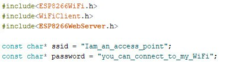
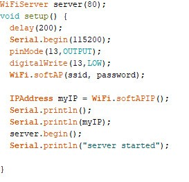
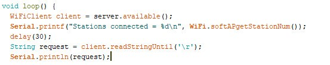
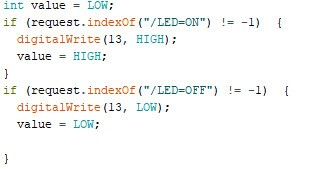
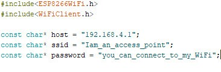
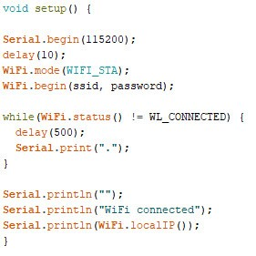
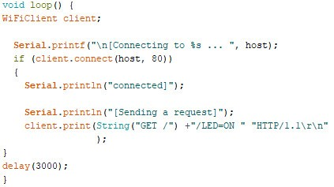
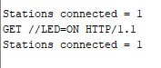
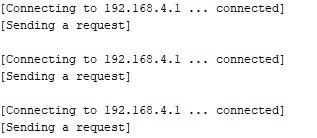

The official blogs released by the team.
Nowadays we can turn off the lights and fans in our house, sitting in the office by just clicking a button on the phone. But how is this possible? The answer to this is Wireless Communication. There are many types of Wireless Communication but this article focusses only on the communication between two NodeMCUs which gives a solution to the above problem.
NodeMCU is an open source IoT platform. It includes firmware which runs on the ESP8266 Wi-Fi SoC(System On Chip) from Espressif Systems, and hardware which is based on the ESP-12 module.
The ESP8266 WiFi Module is a self contained SoC with integrated TCP/IP protocol stack that can give any microcontroller access to your WiFi network. The ESP8266 is capable of either hosting an application or offloading all Wi-Fi networking functions from another application processor. Each ESP8266 module comes pre-programmed with an AT command set firmware, meaning, you can simply hook this up to your Arduino device and get about as much WiFi-ability as a WiFi Shield offers (and that's just out of the box)! The ESP8266 module is an extremely cost effective board with a huge, and ever growing, community. This module has a powerful enough on-board processing and storage capability that allows it to be integrated with the sensors and other application specific devices through its GPIOs with minimal development up-front and minimal loading during runtime. Its high degree of on-chip integration allows for minimal external circuitry, including the front-end module, is designed to occupy minimal PCB area. The ESP8266 supports APSD for VoIP applications and Bluetooth co-existance interfaces, it contains a self-calibrated RF allowing it to work under all operating conditions, and requires no external RF parts.
There are two Microcontrollers (NodeMCUs). One is the server and the other is a client. The client sends a request and the server performs some action based on the request (either it can perform some task or give back some information to the client). Here, the client will send a request to turn an LED on or off. WiFi capabilities for NodeMCU comes from the ESP8266 WiFi module present in it. A NodeMCU can be coded in two modes, Station mode and Soft Access Point (Soft AP) mode.
Devices that connect to Wi-Fi networks are called stations (STA). Connection to Wi-Fi is provided by an access point(AP), that acts as a hub for one or more stations. The access point on the other end is connected to a wired network. An access point is usually integrated with a router to provide access from a Wi-Fi network to the internet. ESP8266 modules can operate as a station, so we can connect it to the Wi-Fi network. It can also operate as a soft access point (soft-AP), to establish its own Wi-Fi network. When the ESP8266 module is operating as a soft access point, we can connect other stations to the ESP module. ESP8266 is also able to operate as both a station and a soft access point mode. This provides the possibility of building, for example, mesh networks.

Set the SSID and password of your Access point. They can be anything but should contain at least 8 characters>. Here we have added password for secured communication but it can be done without a password as well.
Start the access point. Here myIP is the IP address of the AP. LED is connected to pin 13 or D7.
Here the first print statement prints the number of stations connected to our access point. Then read the request sent by the client.
Based on the request either turn on the LED or turn it off.

Host contains the IP address of the AP (Access point). Here the SSID and password should be the same as the AP because we have to connect this Station to the WiFi of the AP.(Here these names appear to be contradicting. But it is OK as they are just identifiers.
Connect the Station to the WiFi of the AP. The program won't proceed further until the wifi is connected.
Connect to the host and send the request. Here, we follow the standard HTTP GET request format. We are continuously sending requests with a delay of 3 seconds.

This is the output from the Serial monitor of the Access Point.
This is the output from the Serial monitor of the station.